Lower Extremity Joints
Connect joint geometry, ligament restraint and movement to predictable injury patterns and clinical examination.
Learning Objectives
- Describe hip articulation, movements, ligaments and stabilizing soft tissues.
- Describe knee articulations, ligaments, menisci, movements, clinical injuries and ligament tests.
- Describe ankle articulations, ligaments, movements and injury mechanisms.
- Identify the bony architecture and major ligamentous supports of foot arches.
- Identify articular nerves conveying pain and proprioception according to Hilton’s Law.
- Identify structures endangered by lower-extremity dislocations and predict symptoms.
- Identify arteries supplying the hip and knee anastomoses and consequences of vascular injury.
Big Picture
Joint shape determines the available motion; capsules, ligaments and muscles constrain that motion. When a force exceeds the restraint, the direction of translation predicts the injured ligament, and nearby vessels or nerves predict the consequences. The hip prioritizes stability; the knee combines load-bearing with mobility; the ankle and foot alternate between a flexible shock-absorbing platform and a rigid lever.
1 · Hip joint: stability and motion
A multiaxial ball-and-socket synovial joint: femoral head articulates with the acetabular lunate surface.
More than half of the femoral head fits in its socket, compared with approximately one-third of the humeral head in the glenoid. The deep socket, labrum and robust capsular thickenings favor stability while allowing flexion/extension, abduction/adduction, medial/lateral rotation and circumduction. Surrounding muscles add dynamic support without a shoulder-like rotator cuff mechanism.
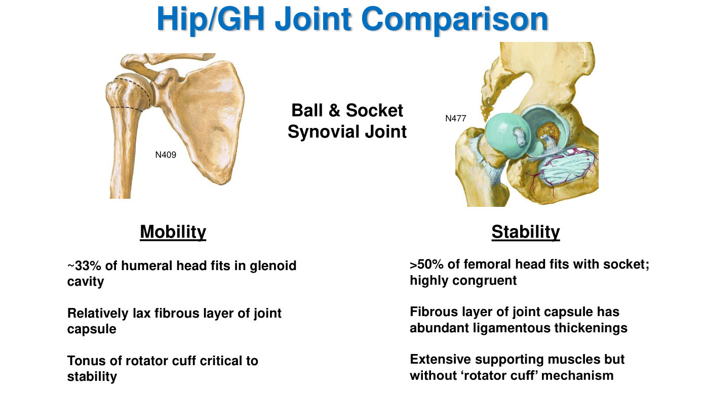
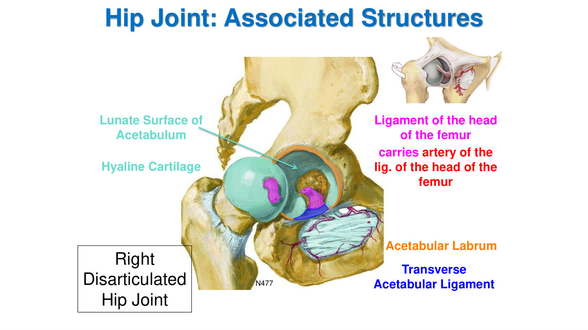
The capsule attaches anteriorly to the intertrochanteric line; posterior attachment is more proximal on the femoral neck rather than at the intertrochanteric crest. The handout describes posterior winding fibers: extension and medial rotation tighten the spiral and seat the head in the acetabulum. Flexion relaxes this restraint.
| Structure | Location / role | Motion restrained |
|---|---|---|
| Iliofemoral (Y ligament of Bigelow) | Anterior and superior capsular reinforcement; strongest ligament in course | Extension |
| Pubofemoral | Anterior and inferior reinforcement | Abduction |
| Ischiofemoral | Posterior capsule | Extension |
| Acetabular labrum | Fibrocartilage at acetabular rim | Deepens socket; increases congruency |
| Transverse acetabular ligament | Bridges acetabular notch | Completes rim |
| Ligament of head of femur | Fovea to acetabular notch region; carries small artery | Little mechanical strength |
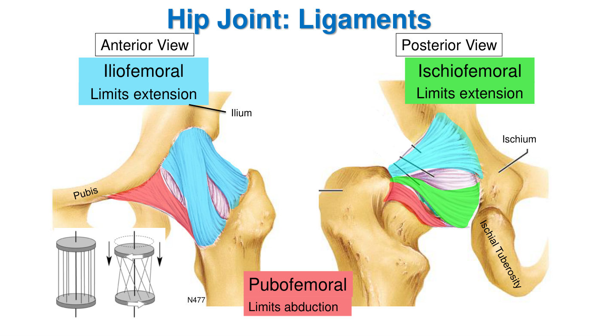
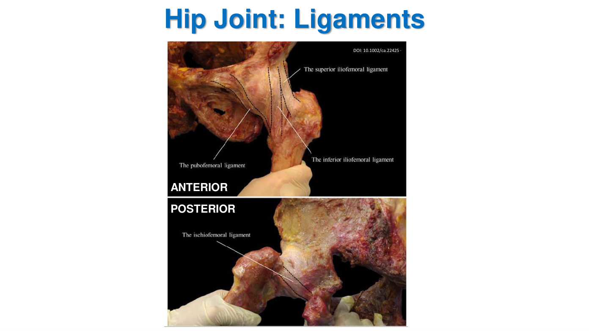
RETRIEVAL CHECKPOINT · Why can quiet standing require relatively little active hip extensor effort?
Extension tensions the capsular ligaments, providing passive restraint.
Hip blood supply and dislocation · LO 6–7
The deep femoral artery typically gives rise to medial and lateral circumflex femoral arteries. Retinacular arteries run along the femoral neck toward the head; the medial circumflex is the dominant contributor. The lateral circumflex has ascending, transverse and descending branches. The artery in the ligament of the femoral head provides minor flow in adults.
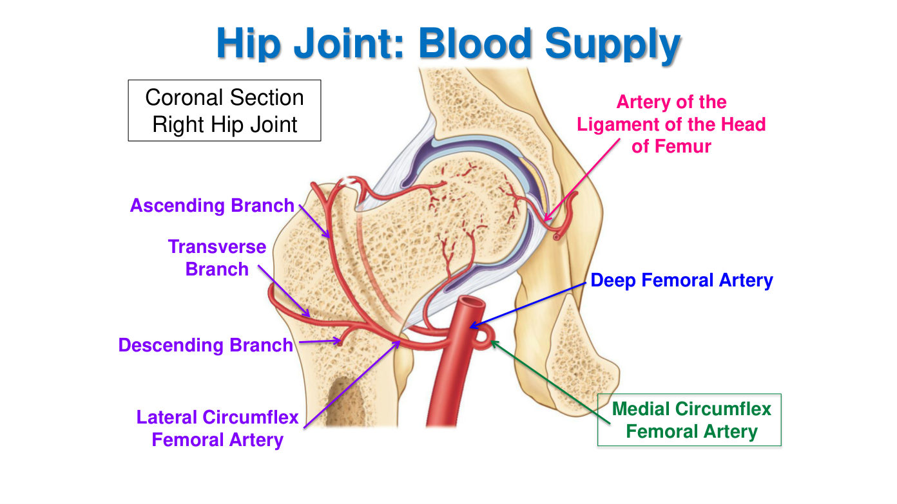
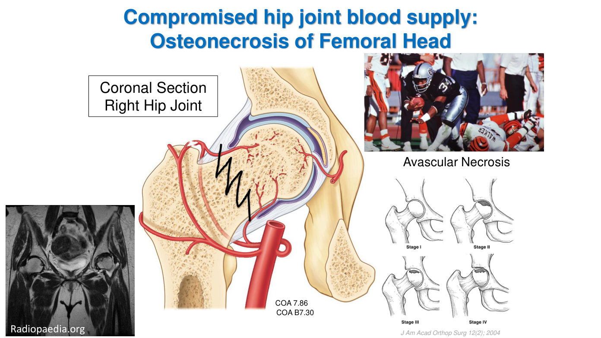
Posterior hip dislocation
Axial force along the femur with a flexed knee (dashboard mechanism) can drive the femoral head posteriorly; the lecture states 90% of hip dislocations are posterior. The limb appears shortened and medially rotated. The nearby sciatic nerve may be stretched or compressed; vascular injury can cause osteonecrosis and secondary osteoarthritis.
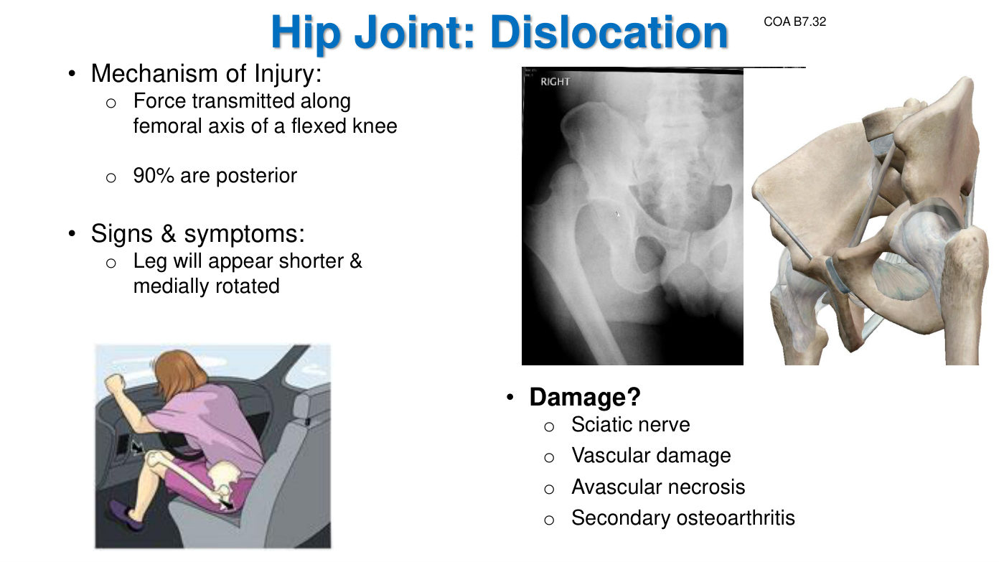
RETRIEVAL CHECKPOINT · A shortened internally rotated limb after a dashboard impact: what structure behind the joint is at risk?
Sciatic nerve; retinacular vessel injury also threatens femoral head perfusion.
2 · Knee joint: structure and biomechanics
Largest synovial joint; modified hinge with flexion/extension, gliding and some axial rotation when flexed. Medial and lateral femoral condyles articulate with tibial condyles; the patella articulates with the femur. Proximal tibiofibular joint is a separate plane synovial joint. Quadriceps are major dynamic stabilizers.
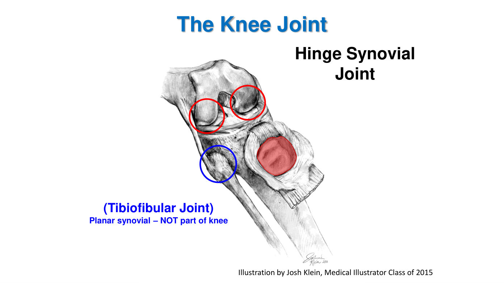
Anterior capsule is reinforced/replaced by quadriceps tendon and patellar ligament; medially by MCL, pes anserinus (sartorius, gracilis, semitendinosus), semimembranosus and medial gastrocnemius; laterally by LCL, biceps femoris and IT band. Cruciate ligaments are intracapsular but extrasynovial.
| Restraint | Anatomic attachment / course | Function |
|---|---|---|
| MCL / tibial collateral (TCL) | Broad medial band, deep fibers attached to medial meniscus | Resists valgus (medial opening) |
| LCL / fibular collateral (FCL) | Cord-like lateral band; musculotendinous support from biceps femoris and IT band | Resists varus (lateral opening) |
| ACL | Medial surface of lateral femoral condyle → anterior intercondylar tibia | Restrains anterior tibial translation, hyperextension and excessive medial tibial rotation |
| PCL | Lateral surface of medial femoral condyle → posterior intercondylar tibia | Restrains posterior tibial translation; broader/stronger |
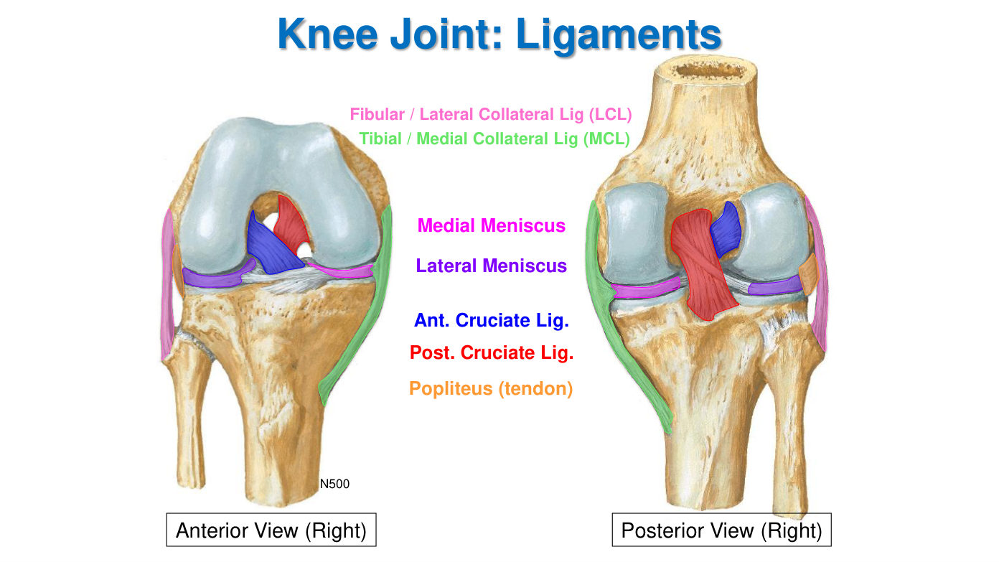
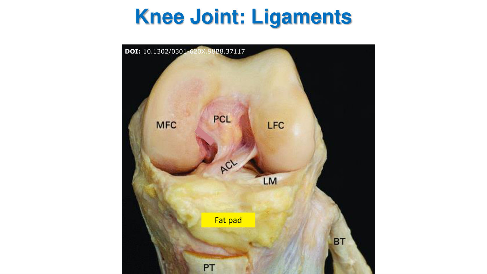
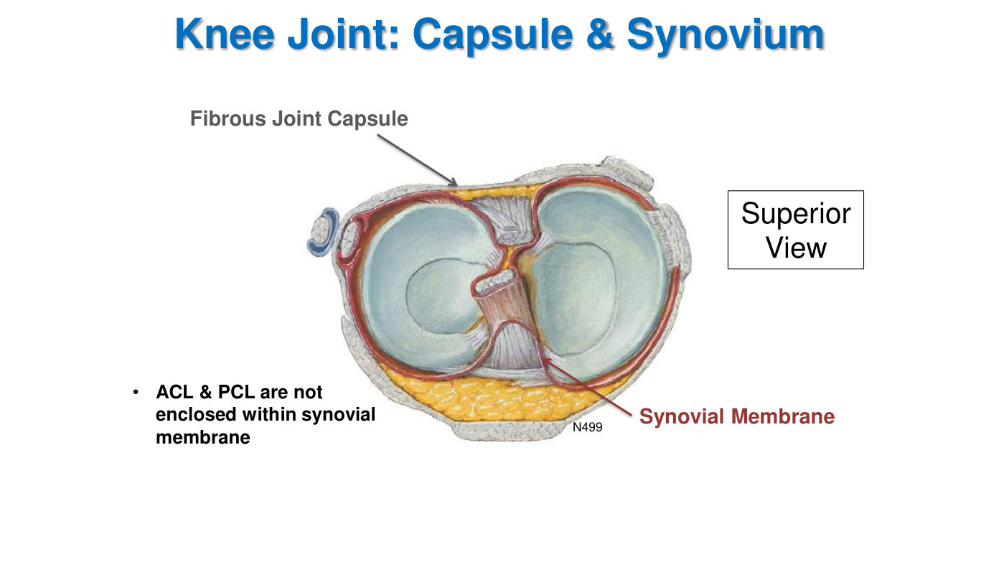
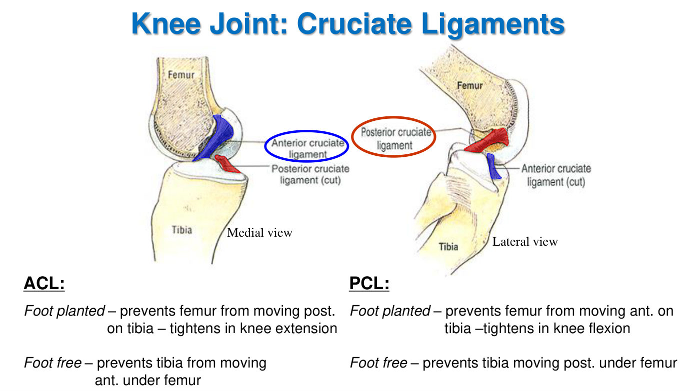
Menisci and load distribution
Fibrocartilaginous menisci deepen the relatively flat tibial plateau, improve congruency and spread compressive load over a larger contact area. Loss of this contact area concentrates stress. The transverse ligament connects the anterior horns.
| Feature | Medial meniscus | Lateral meniscus |
|---|---|---|
| Shape | C-shaped, broader posteriorly | Nearly circular, smaller |
| Mobility | Limited; attached to deep MCL | More freely mobile; popliteus nearby |
| Function | Deepens tibial surface, distributes load | Same; popliteus pulls it posteriorly during flexion |
| Injury | Generally more susceptible | More frequently involved with combined ACL/MCL injury per lecture |
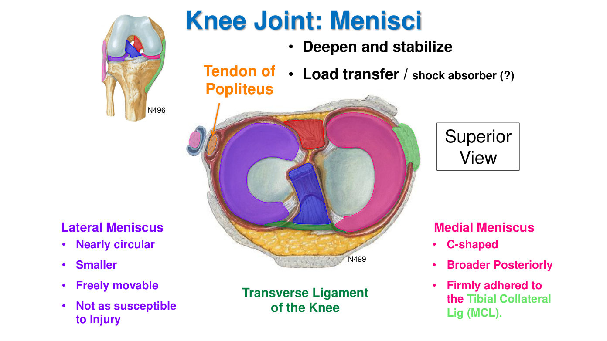
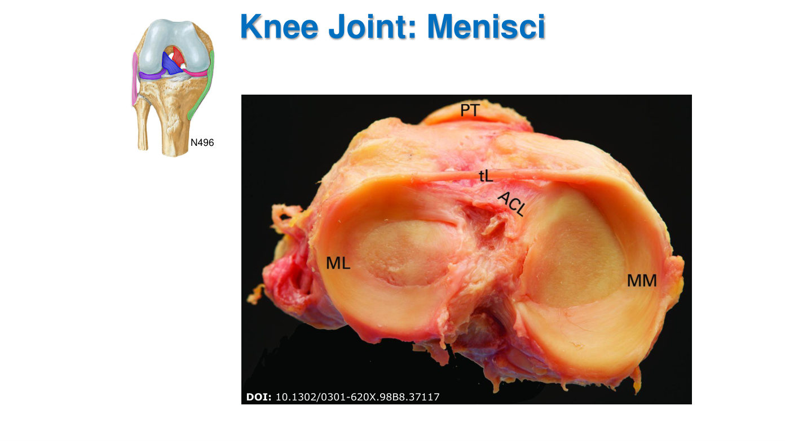
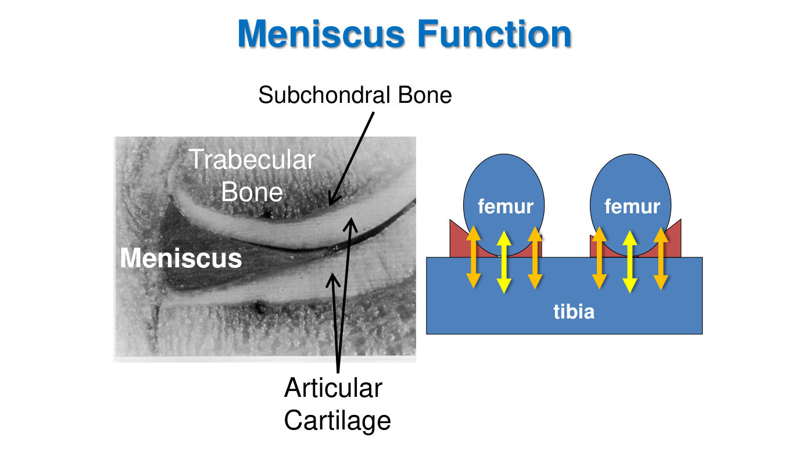
Screw-home mechanism
During terminal extension with foot planted, condylar and meniscal geometry causes femoral medial rotation on tibia, locking the joint into stable quiet standing. Popliteus reverses this by laterally rotating the femur to initiate flexion. With a free foot, the equivalent unlocking motion is medial tibial rotation.
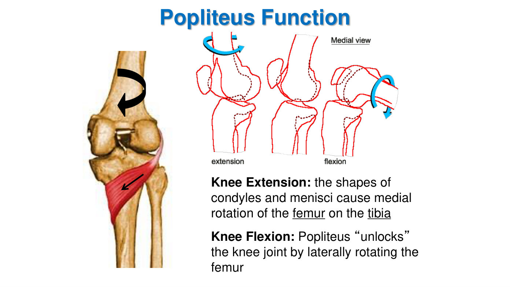
RETRIEVAL CHECKPOINT · Which ligament prevents the femur moving anteriorly on a planted tibia?
PCL — equivalent to preventing posterior translation of the tibia in open chain.
Knee clinical examination, injuries and bursae · LO 2, 6
Tests reproduce the displacement that a healthy ligament normally prevents. In anterior drawer, the handout emphasizes relaxation of the hamstrings; Lachman better isolates ACL function and is described as the gold standard in the handout.
| Injury / mechanism | Test | Positive finding |
|---|---|---|
| MCL: lateral impact / valgus or rotational injury | Valgus stress with knee flexed | Excess medial opening / abduction |
| LCL: medial impact / varus | Varus stress with knee flexed | Excess lateral opening / adduction |
| ACL: anterior tibial translation, pivot or hyperextension | Lachman (~30° flexion); anterior drawer (hip 45°, knee 90°) | Excess anterior translation; lax endpoint |
| PCL: posterior force to anterior tibia with knee flexed | Posterior drawer | Excess posterior translation |
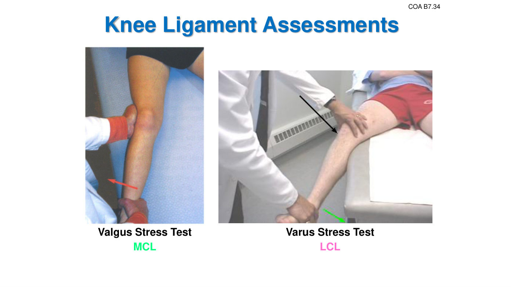
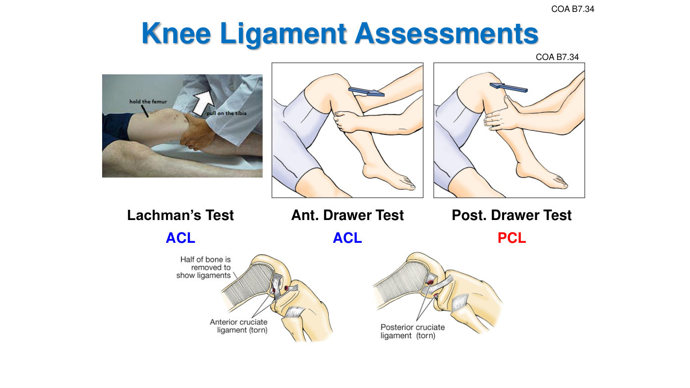
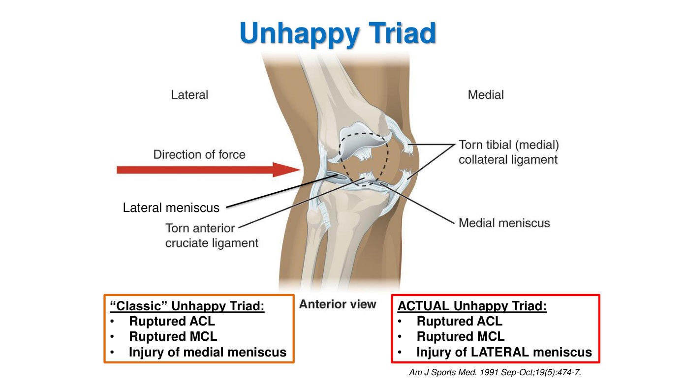
Hyperextension usually damages the ACL; severe cases may tear both cruciates. A tibiofemoral dislocation is distinct from patellar dislocation.
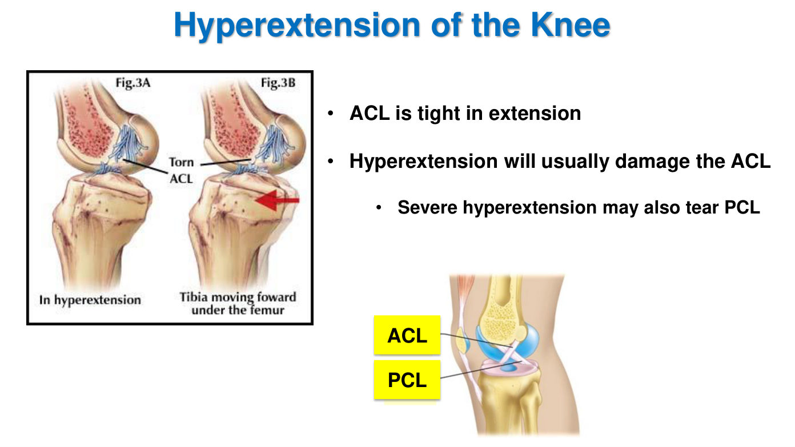
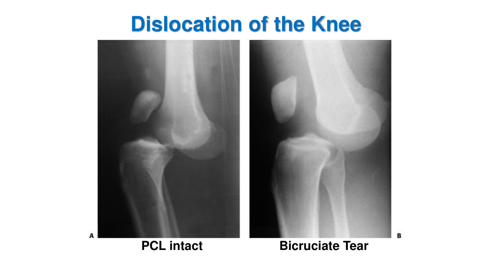
Bursae and alignment
| Bursa | Location / function | Clinical pattern |
|---|---|---|
| Prepatellar | Superficial to patella; skin glides | Housemaid’s knee: repetitive kneeling |
| Superficial infrapatellar | Skin over patellar ligament/tibial tuberosity | Clergyman’s knee: prolonged kneeling on hard surfaces |
| Deep infrapatellar | Deep to patellar ligament | Reduces tendon/bone friction |
| Suprapatellar | Deep to quadriceps tendon; articularis genu pulls it superiorly in extension | Prevents pinching of synovium |
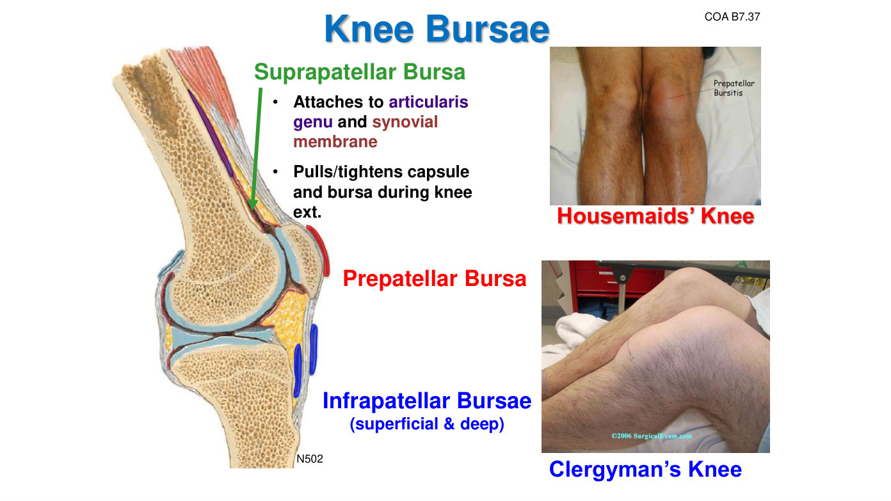
Q-angle is the angle between ASIS-to-patella and patella-to-tibial tuberosity lines. Genu varum (bowlegged) decreases Q-angle and increases medial compartment load. Genu valgum (knock-kneed) increases Q-angle and lateral compartment load.
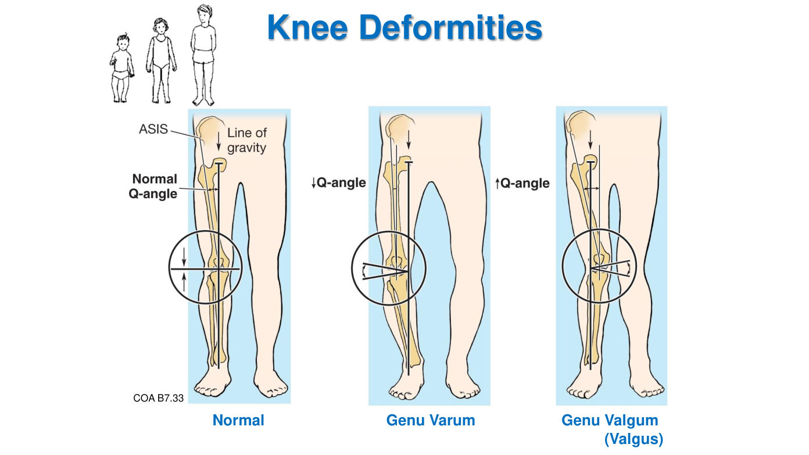
RETRIEVAL CHECKPOINT · A planted-foot lateral blow causes medial opening and excess anterior tibial movement. Which ligaments, and which meniscus distinction?
MCL and ACL. Classic triad medial meniscus; actual more frequent lateral meniscus.
3 · Talocrural joint and ankle injuries
The talocrural joint is a hinge synovial joint between the distal tibia/fibula (mortise) and talar trochlea. The sharp lateral malleolus extends approximately 2 cm farther distally than the blunt medial malleolus (course handout). The anterior trochlea is wider than the posterior: dorsiflexion wedges the wide portion into the mortise, increasing congruency; plantarflexion seats the narrow portion, allowing more wobble and susceptibility to inversion.
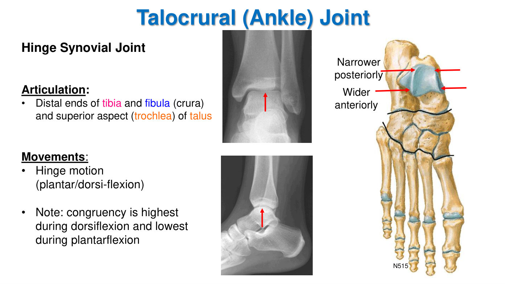
| Ligament complex | Components | Restrains |
|---|---|---|
| Lateral collateral | ATFL, PTFL, calcaneofibular | Inversion; ATFL most commonly injured |
| Medial collateral (deltoid) | Anterior/posterior tibiotalar, tibiocalcaneal, tibionavicular | Eversion; strong, broad complex |
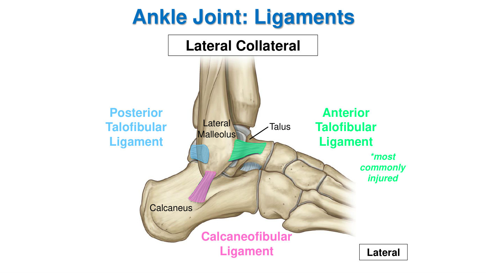
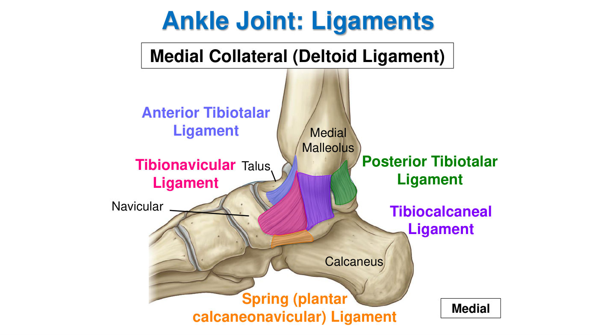
Dorsiflexion: tibialis anterior, fibularis tertius, EHL and EDL. Plantarflexion: chiefly gastrocnemius and soleus through the Achilles tendon. The handout downplays other tendons for relevant talocrural motion; the preceding Leg and Foot lecture assigns weak plantarflexion to several posterior and lateral muscles. Treat the present list as primary movers, not an absolute absence of contribution.
Severe inversion/eversion can cause fracture-dislocation (Pott fracture-dislocation in lecture terminology). The depicted eversion injury disrupts the mortise with medial and fibular injury.
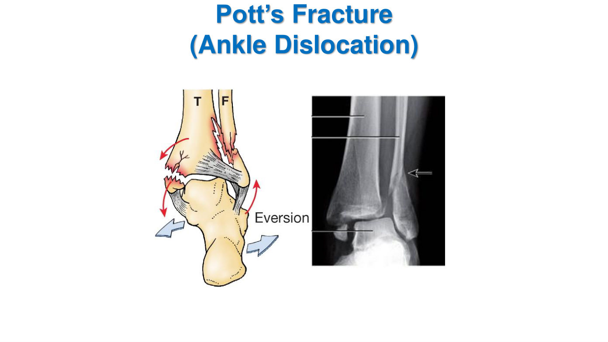
RETRIEVAL CHECKPOINT · Why is a plantarflexed ankle more prone to inversion injury?
Narrow posterior talar trochlea fits more loosely in the mortise; lateral ligaments, especially ATFL, are vulnerable.
4 · Foot joints and arches
Arches distribute body weight, absorb load and store/release energy for propulsion. Bone shape provides the architecture; ligaments provide passive tension and muscles provide dynamic reinforcement.
| Arch | Bones | Key support |
|---|---|---|
| Medial longitudinal | Calcaneus, talus, navicular, 3 cuneiforms, metatarsals 1–3 | Talar head keystone; spring ligament; tibialis posterior |
| Lateral longitudinal | Calcaneus, cuboid, metatarsals 4–5 | Long and short plantar ligaments; lower and contacts ground |
| Transverse | Cuboid, cuneiforms, metatarsal bases | Fibularis longus and tibialis posterior tendon stirrup |
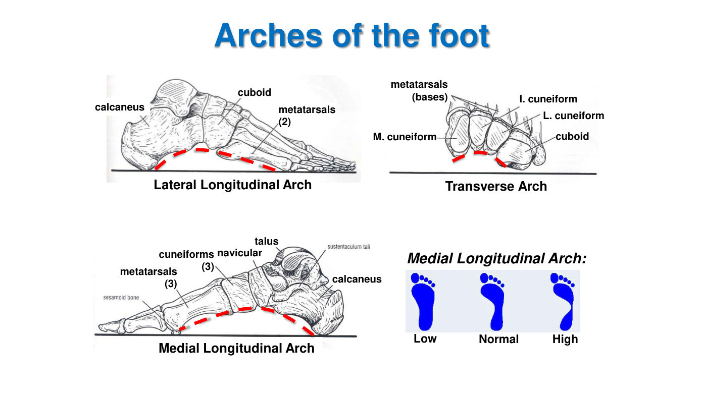
| Joint | Articulation / type | Motion |
|---|---|---|
| Subtalar (talocalcaneal) | Inferior talus + superior calcaneus; plane synovial | Bulk of inversion/eversion; interosseous talocalcaneal ligaments |
| Calcaneocuboid | Calcaneus + cuboid; plane synovial | Part of transverse tarsal joint |
| Talonavicular component | Talar head + navicular; ball-and-socket component of talocalcaneonavicular joint | Part of transverse tarsal joint; assists inversion/eversion |
| Tarsometatarsal | Tarsals to metatarsal bases | Briefly identified on slide only |
| Metatarsophalangeal | Metatarsal heads to proximal phalanges | Flex/extend; some ab/adduction |
| Interphalangeal | Adjacent phalanges | Flex/extend |
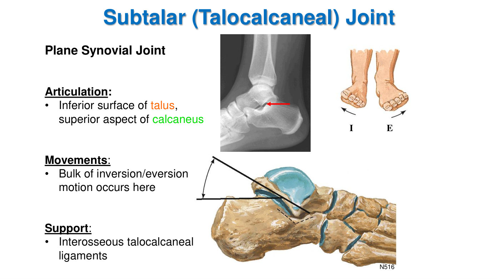
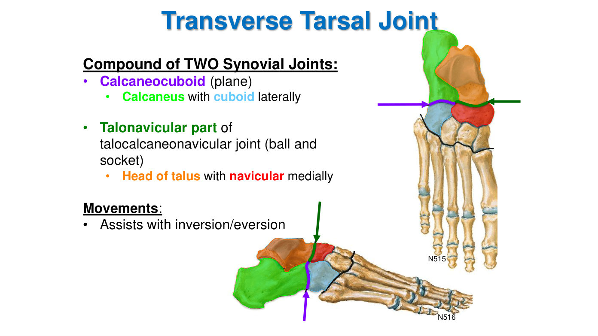
Inverters: tibialis anterior and posterior; everters: fibularis longus and brevis resist inversion injury. A hard fall on the heel can comminute the calcaneus and disrupt subtalar function. Spring (plantar calcaneonavicular) ligament supports the talar head; long and short plantar ligaments reinforce the plantar/lateral architecture.
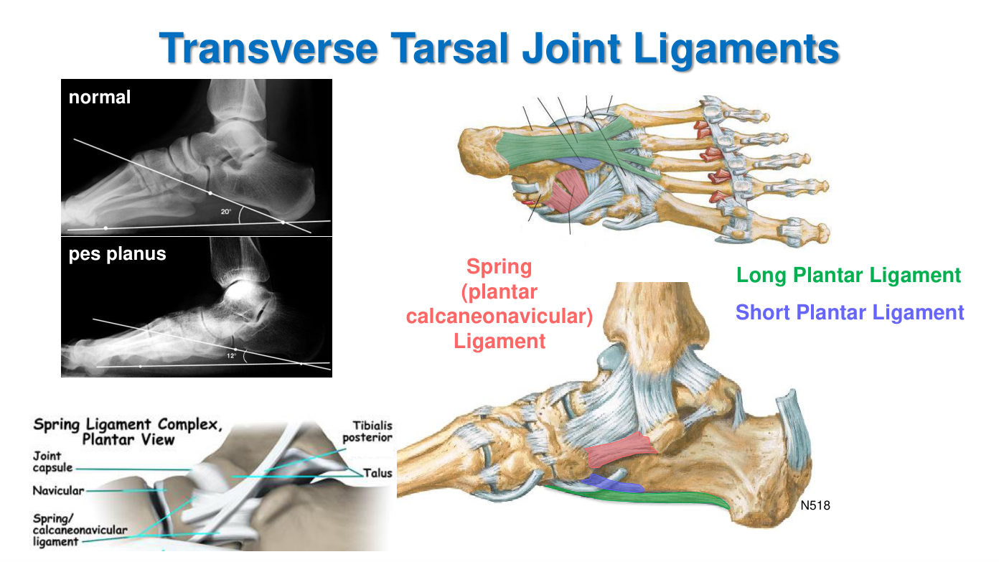
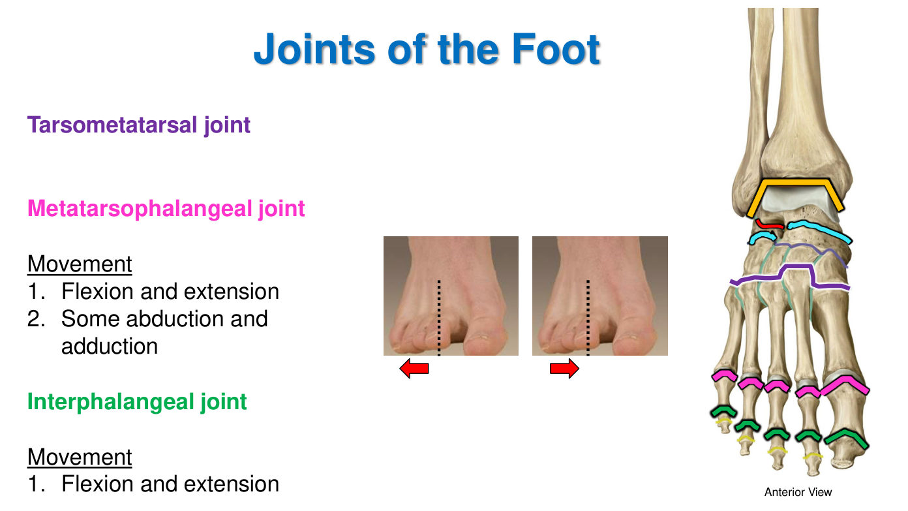
RETRIEVAL CHECKPOINT · Which two tendons act as a stirrup to maintain transverse arch curvature?
Fibularis longus and tibialis posterior.
5 · Hilton’s Law: articular innervation
Hilton’s Law links the nerves supplying muscles moving a joint to sensory articular branches conveying pain and proprioception. Work backward from the muscle groups, then identify the articular branches.
| Joint | Nerves / movement associations |
|---|---|
| Hip | Femoral (flexors); obturator (adductors and posterior branch/lateral rotators); nerves to quadratus femoris and obturator internus (lateral rotators); superior gluteal (abductors/medial rotators); sciatic and inferior gluteal (extensors) per handout |
| Knee | Femoral and sciatic (tibial/common fibular divisions); obturator and saphenous articular branches per handout |
| Ankle | Deep fibular (dorsiflexors), tibial (plantarflexors), with additional articular sensory contributions from superficial fibular and sural nerves; see scope note |
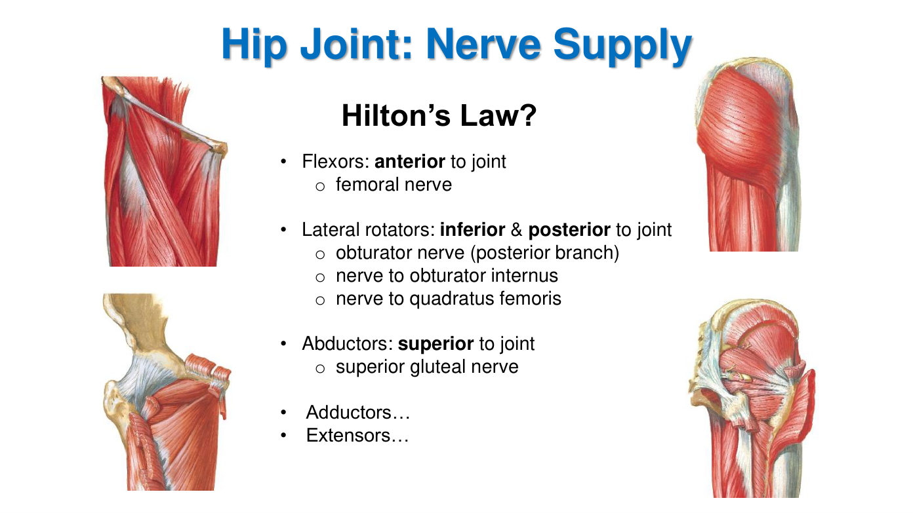
6–7 · Neurovascular risk and anastomoses
Genicular collateral circulation connects vessels above and below the knee, offering alternate paths during flexion or partial obstruction. It does not guarantee adequate perfusion after acute popliteal artery trauma.
| Source | Branches |
|---|---|
| Popliteal artery | Superior medial/lateral and inferior medial/lateral genicular arteries form the peripheral network; middle genicular supplies internal structures |
| Femoral artery | Descending genicular artery |
| Deep femoral via lateral circumflex femoral | Descending branch of lateral circumflex femoral artery |
| Anterior tibial artery | Anterior tibial recurrent artery |
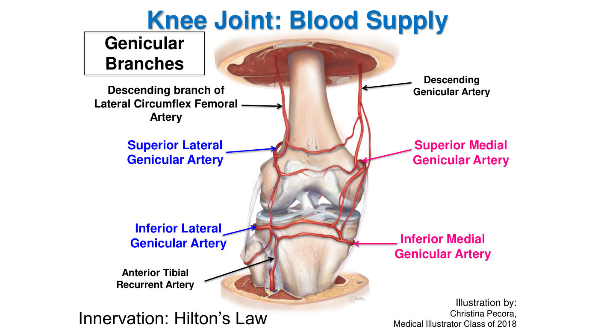
| Injury | Structure at risk | Predicted finding |
|---|---|---|
| Femoral neck fracture / posterior hip dislocation | Retinacular arteries, especially medial circumflex femoral supply | Femoral head osteonecrosis |
| Posterior hip dislocation | Sciatic nerve | Distal weakness/sensory loss |
| Tibiofemoral dislocation (enrichment) | Popliteal artery, common fibular nerve | Ischemia, foot drop |
| Ankle fracture-dislocation (enrichment) | Distal neurovascular structures | impaired perfusion or distal sensorimotor deficit |
RETRIEVAL CHECKPOINT · Why is the ligament-of-head artery alone often insufficient after a femoral neck fracture?
It supplies only a minor part of adult femoral head circulation; the dominant retinacular supply has been interrupted.
Master these before moving on
Joint congruency
Deep sockets and wider articular contact increase stability; apply this to hip and dorsiflexed ankle.
Directional restraints
Name the moving bone and direction before choosing ACL/PCL or MCL/LCL.
Meniscal distinction
General medial vulnerability is not the same as the more common lateral tear in combined ACL/MCL injuries.
Neurovascular adjacency
Predict which structures lie behind a displaced joint and why viability or motor function may be lost.
Foot arches
Separate osseous shape, passive ligament support and active tendon support.
Most useful First Aid connections
- Low versus high ankle sprain: ATFL versus anterior inferior tibiofibular ligament (p.458).
- Unhappy triad: classic medial, more commonly lateral in combined ACL/MCL injury (p.464).
- Prepatellar bursitis: repeated kneeling → inflammation anterior to patella (p.464).